Jab aap ek raw Seaborn chart banate hain, toh data mathematically toh accurate hota hai, lekin presentation-wise aksar reader confuse ho jata hai. Legends data points ko hide kar dete hain, default colors project branding ke saath match nahi karte, aur viewers ko pata hi nahi chalta ki sabse important data point ya outlier kaun sa hai! Is in-depth lesson me hum Seaborn ke 3 sabse powerful visual polishers—Custom Palettes, Legends Positioning, aur Smart Annotations—ko real-world practical examples aur natural Hinglish ke saath master karenge!
Imagine kijiye aap college analytics team me hain aur aapne student study hours aur unke exam marks ka scatter plot banaya. Data bilkul sahi hai (correlation r = 0.9304), lekin default graph me:
Yahi difference hota hai ek amateur plot aur ek publication-ready executive visual me! Jab aap Custom Palettes se brand colors match karte hain, Legends ko intelligently canvas se bahar anchor karte hain, aur Annotations se direct key findings highlight karte hain, toh graph bina kisi voiceover ke self-explanatory ban jata hai.
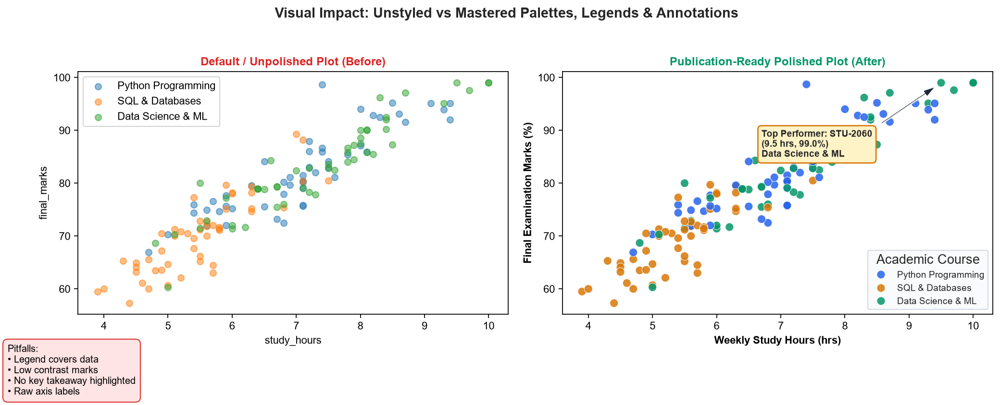
Chaliye dekhte hain ki Matplotlib aur Seaborn me hum in dono charts ko code me kaise build karte hain:
import seaborn as sns
import matplotlib.pyplot as plt
import pandas as pd
# Load verified college student dataset
df = pd.read_csv("scratch/seaborn_topic19_data/student_course_performance.csv")
# 1. Unpolished Raw Plot (Left side of Figure 19.1)
plt.figure(figsize=(6, 5))
sns.scatterplot(data=df, x="study_hours", y="final_marks", hue="subject")
plt.title("Default Unpolished Plot")
# Notice: Default legend places inside and collides with top-left scatter marks!
# 2. Polished Publication-Ready Plot (Right side of Figure 19.1)
plt.figure(figsize=(6, 5))
custom_colors = {"Python Programming": "#2563EB", "SQL & Databases": "#D97706", "Data Science & ML": "#059669"}
ax = sns.scatterplot(
data=df,
x="study_hours",
y="final_marks",
hue="subject",
palette=custom_colors,
s=60,
alpha=0.85
)
# Highlight Topper (STU-2060)
ax.annotate(
"Topper: STU-2060\n(9.5 hrs, 99.0%)",
xy=(9.5, 99.0),
xytext=(9.5 - 2.8, 99.0 - 14),
arrowprops=dict(facecolor="#1E293B", shrink=0.08, width=1.5, headwidth=7),
bbox=dict(boxstyle="round,pad=0.4", facecolor="#FEF3C7", edgecolor="#D97706", linewidth=1.2),
fontsize=8.5,
weight="bold"
)
ax.set_title("Publication-Ready Academic Plot", fontsize=11, weight="bold")
ax.set_xlabel("Weekly Study Hours (hrs)", fontsize=10, weight="semibold")
ax.set_ylabel("Final Examination Marks (%)", fontsize=10, weight="semibold")
ax.legend(title="Academic Course", loc="lower right", frameon=True)
plt.tight_layout()
plt.show()Ek reader ko kisi bhi business ya educational chart ka main insight samajhne me sirf 3 seconds lagne chahiye. Agar viewer ko legend aur axis ke beech aankhen ghumani pade, toh chart ka design weak hai. Annotations viewer ki eye movement ko direct conclusion tak lead karti hain!
Visual design shuru karne se pehle hum data distribution inspect karte hain taaki sensible color mappings aur annotation targets identify ho sakein:
import pandas as pd
df = pd.read_csv("scratch/seaborn_topic19_data/student_course_performance.csv")
print("Total Student Records:", len(df))
print("\nSubject breakdown and average scores:")
print(df.groupby("subject")[["study_hours", "final_marks"]].mean().round(2))
# Find the highest performer
topper = df.loc[df["final_marks"].idxmax()]
print(f"\nTopper Student ID: {topper['student_id']} | Marks: {topper['final_marks']}% | Course: {topper['subject']}")Data visualization me color sirf decorative element nahi hota, balki information encode karne ka primary visual channel hai. Galat color choice reader ko mislead kar sakti hai.
Seaborn color palettes ko 3 fundamental scientific categories me divide karta hai:
| Palette Category | Ideal Data Type | Seaborn Built-in Examples | Design Intent |
|---|---|---|---|
| Qualitative / Categorical | Nominal categories (Subject, Region, Department) | deep, muted, bright, pastel, dark, colorblind |
Har category ko distinct hue provide karta hai jisme koi visual ordering ya weight nahi hoti. |
| Sequential | Ordered numeric values (Revenue, Age, Temperature) | Blues, mako, rocket, viridis |
Light se dark intensity me shift hota hai. Higher values naturally darker ya brighter appear hoti hain. |
| Diverging | Values centered around a critical midpoint (Profit/Loss, Temperature delta) | vlag, icefire, coolwarm, Spectral |
Dono extremes par contrasting colors hote hain aur neutral midpoint (white/light grey) par converge hote hain. |
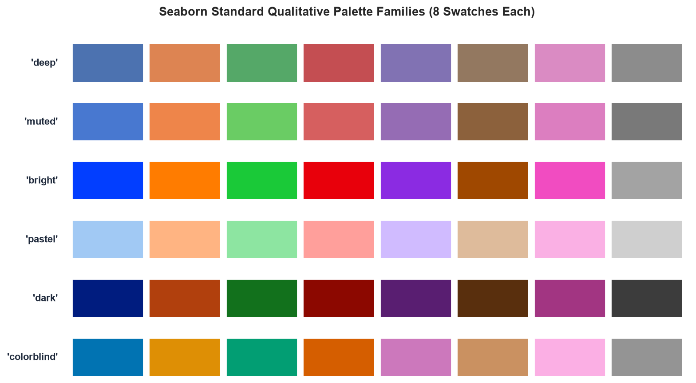
sns.palplot() & sns.color_palette()
Seaborn me kisi bhi palette ko preview karne ke liye sns.palplot() ya Matplotlib patch rendering use ki ja sakti hai:
import seaborn as sns
import matplotlib.pyplot as plt
# 1. Preview Seaborn standard qualitative palette 'colorblind'
current_pal = sns.color_palette("colorblind", 8)
sns.palplot(current_pal)
plt.title("Seaborn 'colorblind' Palette (8 Swatches)", fontsize=10, weight="bold")
plt.show()
# 2. Extract hex color codes from a palette
hex_colors = current_pal.as_hex()
print("Colorblind Hex Codes:", hex_colors)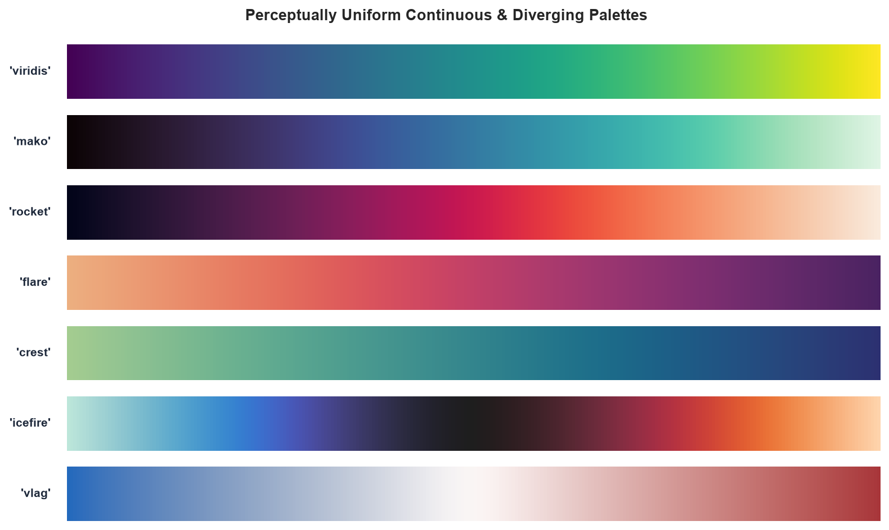
viridis, mako, rocket, flare, crest, icefire, vlag) designed for seamless human perception.
Jab data continuous hota hai, toh legacy colormaps jaise jet ya rainbow artificial gradients create karte hain. Seaborn modern perceptually uniform colormaps recommend karta hai:
import seaborn as sns
import matplotlib.pyplot as plt
import numpy as np
# Create synthetic 2D matrix
data_matrix = np.linspace(0, 100, 100).reshape(10, 10)
fig, axes = plt.subplots(1, 2, figsize=(10, 4))
# Using 'mako' (Sequential, dark to light)
sns.heatmap(data_matrix, cmap="mako", ax=axes[0], cbar_kws={"label": "Intensity"})
axes[0].set_title("Sequential Palette: 'mako'", fontsize=10, weight="bold")
# Using 'vlag' (Diverging, centered at 50)
sns.heatmap(data_matrix, cmap="vlag", center=50, ax=axes[1], cbar_kws={"label": "Divergence"})
axes[1].set_title("Diverging Palette: 'vlag' (Centered at 50)", fontsize=10, weight="bold")
plt.tight_layout()
plt.show()Purane tutorials me jet ya rainbow colormap dekha hoga. Matplotlib aur Seaborn dono ise strongly discourage karte hain kyunki human brain green aur yellow ko zyada brighter perceive karta hai, jisse non-existent patterns visualize ho jaate hain. Hamesha viridis, mako, ya rocket use karein!
Real-world company projects me client ke brand guideline colors hote hain (e.g., CodeVerse Blue #2563EB, Amber #D97706, Emerald #059669). Seaborn aapko scratch se custom palettes create karne ke kai convenient functions deta hai.
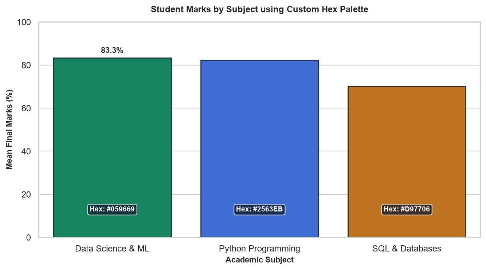
sns.color_palette(["#2563EB", "#D97706", "#059669"]) — Sabse direct aur reliable tareeka discrete categories ke liye.sns.light_palette("#2563EB", n_colors=6) — Kisi base color se shuru karke lighter shades ka smooth gradient generate karta hai.sns.dark_palette("#059669", n_colors=6) — Base color se deep dark shades ka sequence banata hai.sns.diverging_palette(h_neg=10, h_pos=240, s=85, l=55, n=7) — HSL color space ke through positive aur negative hues ka mathematically balanced diverging spectrum build karta hai.sns.blend_palette(["#3B82F6", "#F59E0B", "#EF4444"], n_colors=9) — Multiple arbitrary hex colors ke beech smooth multi-point interpolation karta hai.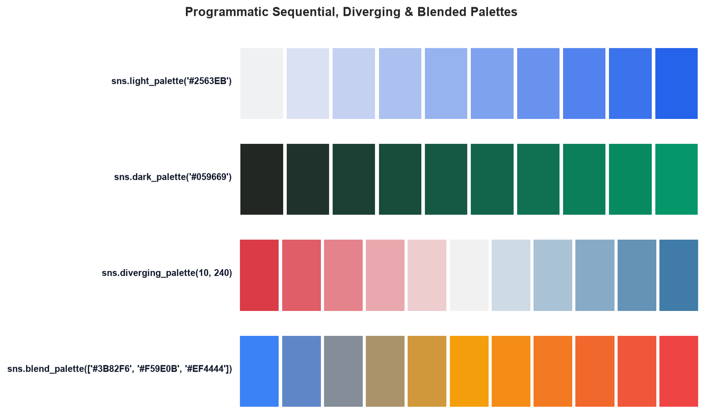
Dekhiye kaise hum custom hex lists define karke bar plots aur continuous maps dono me pass kar sakte hain:
import seaborn as sns
import matplotlib.pyplot as plt
import pandas as pd
# Load dataset
df = pd.read_csv("scratch/seaborn_topic19_data/student_course_performance.csv")
sub_avg = df.groupby("subject", as_index=False)["final_marks"].mean()
# 1. Custom Hex List for Categorical Barplot
brand_palette = sns.color_palette(["#2563EB", "#D97706", "#059669"])
plt.figure(figsize=(7, 4.5))
ax = sns.barplot(
data=sub_avg,
x="subject",
y="final_marks",
hue="subject",
palette=brand_palette,
legend=False
)
ax.set_ylim(0, 100)
ax.set_title("Mean Marks with Brand Hex Palette", fontsize=11, weight="bold")
plt.tight_layout()
plt.show()Programmatic functions ke parameters ko dynamically tweak karke custom corporate scales generate karna:
import seaborn as sns
import matplotlib.pyplot as plt
# 1. Light sequential palette from brand blue
light_blue = sns.light_palette("#2563EB", n_colors=8)
# 2. Dark sequential palette from emerald green
dark_green = sns.dark_palette("#059669", n_colors=8)
# 3. Mathematically balanced diverging palette (Red-to-Blue, 10 to 240 degrees in HSL)
div_rb = sns.diverging_palette(10, 240, n=9, center="light")
# 4. Multi-color arbitrary blend
custom_blend = sns.blend_palette(["#3B82F6", "#F59E0B", "#EF4444"], n_colors=11)
print("Generated Diverging Hex Codes:")
print(div_rb.as_hex())Production dashboards me hardcoded hex lists har chart me repeat mat kijiye. Ek dedicated dictionary ya YAML config file banaiye: BRAND_THEME = {"primary": "#2563EB", "accent": "#F59E0B", "success": "#10B981"}. Isse puri company ka UI aur data reports consistent dikhte hain!
Seaborn me hue parameter data ke teesre dimension ko color ke zariye encode karta hai. Lekin yahan do critical concepts hain jinhe samajhna behad zaroori hai: Categorical vs Continuous Hue aur Color Identity Locking via Dictionaries.
Jab aap hue me discrete string values (jaise grade ['A', 'B', 'C', 'F'] ya subject names) pass karte hain, toh Seaborn qualitative palette use karta hai aur har category ko discrete legend handles deta hai. Lekin jab column numeric continuous values (jaise project_score 50–100) hold karta hai, toh Seaborn continuous colorbar ya binned gradient legend create karta hai!
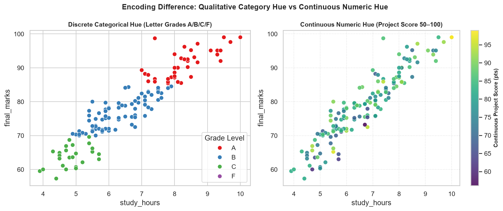
Agar aap Seaborn ko simple list dete hain (jaise palette=['blue', 'orange', 'green']), toh Seaborn filtered data ke pehle unique elements ko sequential colors assign karta hai.
Agar ek dashboard page par Python Programming absent hai (e.g. kisi department me sirf SQL aur Data Science padhai jaati hai), toh SQL ko Blue color mil jayega aur Data Science ko Orange! Viewer confuse ho jayega ki pehle toh Python Blue tha!
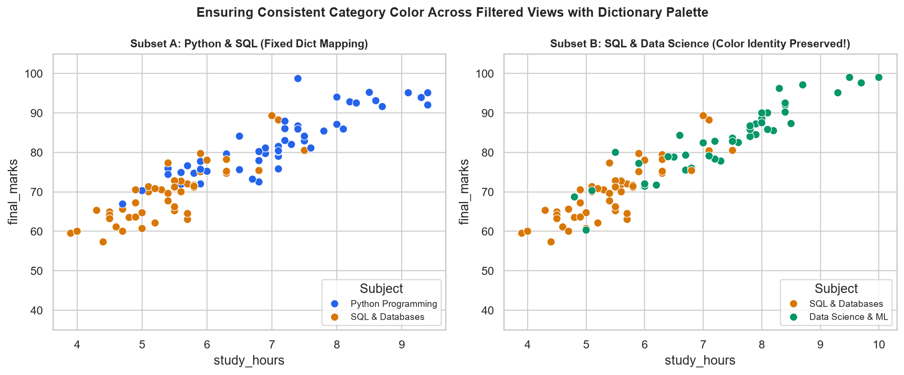
{"category": "#hex"}.Hamesha explicit Python dictionary banaiye: palette={"Python Programming": "#2563EB", "SQL & Databases": "#D97706", "Data Science & ML": "#059669"}. Isse chahe koi category filter out ho ya reorder ho, har entity ka color 100% frozen rehta hai!
Yeh script dikhata hai ki kaise string vs numeric columns Seaborn ke internal color rendering pipeline ko switch karte hain:
import seaborn as sns
import matplotlib.pyplot as plt
import pandas as pd
df = pd.read_csv("scratch/seaborn_topic19_data/student_course_performance.csv")
fig, axes = plt.subplots(1, 2, figsize=(11, 4.5))
# 1. Categorical Hue with hue_order
sns.scatterplot(
data=df,
x="study_hours",
y="final_marks",
hue="grade",
hue_order=["A", "B", "C", "F"],
palette="Set1",
s=50,
ax=axes[0]
)
axes[0].set_title("Categorical Hue: Letter Grades", fontsize=10.5, weight="bold")
# 2. Continuous Numeric Hue (Continuous Viridis Gradient)
sc = axes[1].scatter(
df["study_hours"],
df["final_marks"],
c=df["project_score"],
cmap="viridis",
s=50,
alpha=0.85
)
fig.colorbar(sc, ax=axes[1], label="Continuous Project Score (pts)")
axes[1].set_title("Numeric Hue: Project Score", fontsize=10.5, weight="bold")
axes[1].set_xlabel("study_hours")
axes[1].set_ylabel("final_marks")
plt.tight_layout()
plt.show()Dekhiye kaise dictionary mapping bina kisi glitch ke subset filtering ko handle karti hai:
import seaborn as sns
import matplotlib.pyplot as plt
import pandas as pd
df = pd.read_csv("scratch/seaborn_topic19_data/student_course_performance.csv")
# Explicit mapping dictionary
SUBJECT_PALETTE = {
"Python Programming": "#2563EB", # Locked Blue
"SQL & Databases": "#D97706", # Locked Amber
"Data Science & ML": "#059669" # Locked Emerald Green
}
# Subset 1: Only Python & SQL
subset_1 = df[df["subject"].isin(["Python Programming", "SQL & Databases"])]
# Subset 2: Only SQL & Data Science (Python is missing!)
subset_2 = df[df["subject"].isin(["SQL & Databases", "Data Science & ML"])]
fig, axes = plt.subplots(1, 2, figsize=(11, 4.5))
sns.scatterplot(data=subset_1, x="study_hours", y="final_marks", hue="subject", palette=SUBJECT_PALETTE, ax=axes[0])
axes[0].set_title("Subset 1: Python & SQL", fontsize=10, weight="bold")
# Notice: SQL remains Amber and Data Science remains Green! No color confusion!
sns.scatterplot(data=subset_2, x="study_hours", y="final_marks", hue="subject", palette=SUBJECT_PALETTE, ax=axes[1])
axes[1].set_title("Subset 2: SQL & Data Science", fontsize=10, weight="bold")
plt.tight_layout()
plt.show()Legend ek statistical plot ka decoding key hai. Jab aap plot me multiple hues, marker styles, ya bubble sizes use karte hain, toh viewer legend ki help se visual marks ko actual real-world entities me map karta hai.
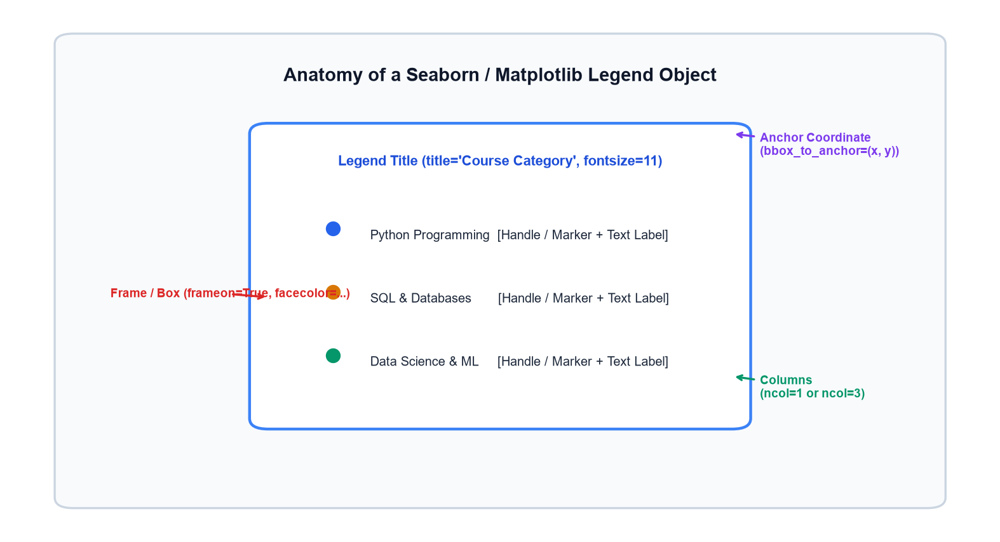
legend_handles): Visual geometric symbols (colored dots, lines, patches) jo plot ke marks ko represent karte hain.texts): Corresponding descriptive strings (jaise "Python Programming", "Electronics").title="Academic Course").frameon=True).(x, y) jahan par legend ka reference point pin kiya jata hai.Kabhi kabhi category names X-axis par already clearly labelled hote hain (jaise bar plots me), isliye duplicate legend ko remove karna visually clean hota hai:
import seaborn as sns
import matplotlib.pyplot as plt
import pandas as pd
df = pd.read_csv("scratch/seaborn_topic19_data/student_course_performance.csv")
# Method 1: Suppress legend inside Seaborn function call
plt.figure(figsize=(6, 4))
sns.barplot(
data=df,
x="subject",
y="final_marks",
hue="subject",
legend=False # Cleanest method in modern Seaborn!
)
plt.title("Bar Plot with Suppressed Redundant Legend")
plt.show()
# Method 2: Suppress programmatically via Matplotlib Axes
plt.figure(figsize=(6, 4))
ax = sns.scatterplot(data=df, x="study_hours", y="final_marks", hue="subject")
legend_obj = ax.get_legend()
if legend_obj:
legend_obj.remove()
plt.title("Scatter Plot with ax.get_legend().remove()")
plt.show()
Aap Matplotlib ke ax.get_legend_handles_labels() se existing handles aur labels inspect kar sakte hain aur unhe re-format kar sakte hain:
import seaborn as sns
import matplotlib.pyplot as plt
import pandas as pd
df = pd.read_csv("scratch/seaborn_topic19_data/student_course_performance.csv")
ax = sns.scatterplot(data=df, x="study_hours", y="final_marks", hue="subject")
handles, labels = ax.get_legend_handles_labels()
print("Extracted Labels:", labels)
print("Total Handles Found:", len(handles))
# Re-assign legend with custom formatting
formatted_labels = [f"Course: {lbl.upper()}" for lbl in labels]
ax.legend(handles=handles, labels=formatted_labels, title="Certified Courses", loc="lower right")
plt.tight_layout()
plt.show()Data visualization me sabse common flaw hota hai: Overlapping Legend! Default Matplotlib placement aksar graph ke valuable data points ko cover kar deti hai.
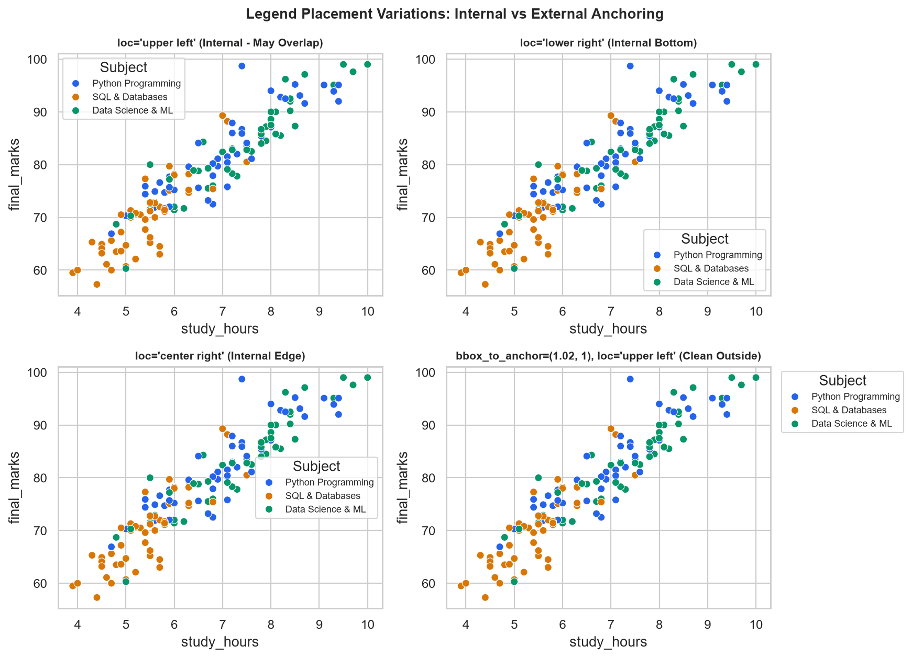
bbox_to_anchorLegend ko plot canvas se bahar move karne ke liye do parameters ka combination use hota hai:
loc='upper left': Batata hai ki legend box ka kaun sa corner anchor point par attach hoga.bbox_to_anchor=(1.02, 1): Axes ke normalized coordinates (x, y) me anchor point specify karta hai. x=1.0 right border hai, isliye 1.02 right boundary se thoda bahar space deta hai.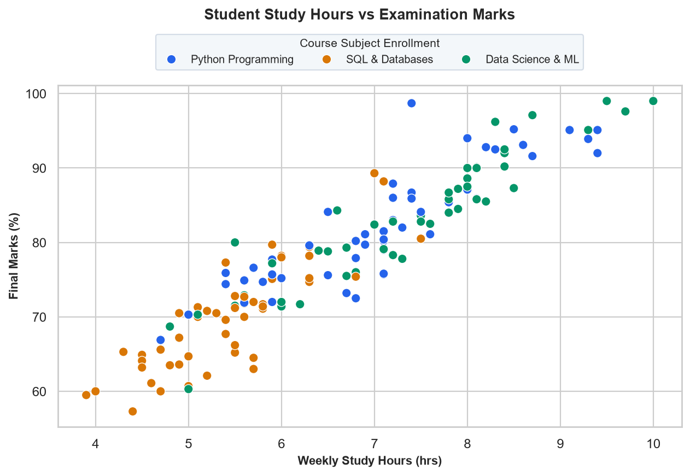
ncol=3 and bbox_to_anchor=(0.5, 1.02).| Parameter | Common Values | Description |
|---|---|---|
loc |
'upper left', 'lower right', 'center' |
Legend box ka reference point (default: 'best'). |
bbox_to_anchor |
(1.02, 1), (0.5, 1.05) |
Normalized axes coordinate (0 to 1) jahan legend pin hoti hai. |
ncol / ncols |
1, 2, 3 |
Items ko multiple columns me arrange karta hai (horizontal flow ke liye). |
frameon |
True, False |
Legend background bounding box ko enable ya disable karta hai. |
facecolor / edgecolor |
'#F8FAFC', '#CBD5E1' |
Background fill color aur border color control karta hai. |
fontsize / title_fontsize |
9, 10, 11 |
Labels aur title ka font size scale karta hai. |
Dekhiye kaise bbox_to_anchor=(1.02, 1) use karke legend ko right side bahar shift kiya jata hai bina layout clip hue:
import seaborn as sns
import matplotlib.pyplot as plt
import pandas as pd
df = pd.read_csv("scratch/seaborn_topic19_data/student_course_performance.csv")
fig, ax = plt.subplots(figsize=(8, 4.8))
sns.scatterplot(
data=df,
x="study_hours",
y="final_marks",
hue="subject",
s=55,
ax=ax
)
# Anchor outside right margin
ax.legend(
title="Academic Subject",
bbox_to_anchor=(1.02, 1.0),
loc="upper left",
frameon=True,
facecolor="#F8FAFC",
edgecolor="#E2E8F0",
fontsize=9
)
plt.tight_layout() # Essential to prevent clipping!
plt.show()sns.move_legend()
Seaborn 0.11.2+ me dedicated function sns.move_legend() add kiya gaya tha, jo Axes-level aur Figure-level dono objects par ek saman kaam karta hai:
import seaborn as sns
import matplotlib.pyplot as plt
import pandas as pd
df = pd.read_csv("scratch/seaborn_topic19_data/student_course_performance.csv")
# Create figure-level plot
g = sns.relplot(
data=df,
x="study_hours",
y="final_marks",
hue="subject",
height=4.5,
aspect=1.2
)
# Relocate legend using modern sns.move_legend()
sns.move_legend(
g,
"lower center",
bbox_to_anchor=(0.5, 1.02),
ncol=3,
title="Enrolled Subject",
frameon=True
)
plt.tight_layout()
plt.show()Jab aap legend ko canvas se bahar move karte hain, toh plt.savefig('chart.png') karte waqt legend right side se crop ho sakti hai. Hamesha plt.savefig('chart.png', bbox_inches='tight') use karein taaki Matplotlib automatically canvas extend kare!
Ek graph tab tak incomplete hota hai jab tak viewer ko yeh na pata chale ki graph me "Story kya hai?". Agar aap student performance chart dikha rahe hain aur viewer ko khud magnifying glass lekar topper dhoondna pade, toh viewer frustrate hoga.
Matplotlib aur Seaborn me annotations add karne ke do primary methods hote hain:
| Method | Primary Purpose | Key Syntax | Ideal Scenario |
|---|---|---|---|
ax.text() |
Static text placement bina kisi arrow indicator ke. | ax.text(x, y, "Label", ha='center') |
Chart subtitles, watermarks, background statistics (mean, total count), quadrant descriptions. |
ax.annotate() |
Directional pointer arrow ke saath text callout box. | ax.annotate("Text", xy=(target), xytext=(offset), arrowprops=dict(...)) |
Specific outlier points, topper students, peak sales spikes, critical SLA breach events. |
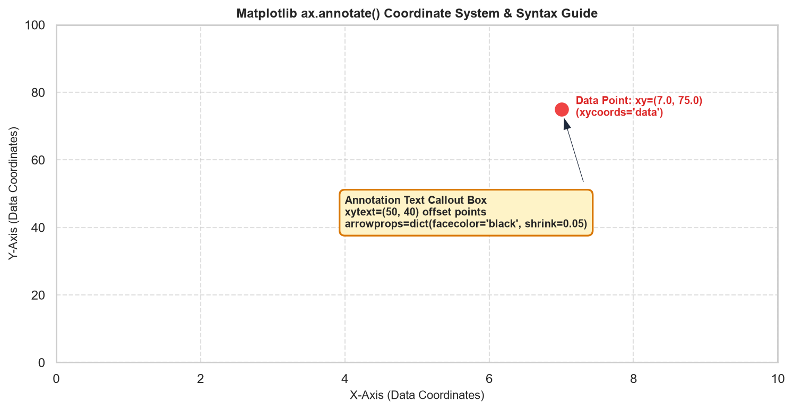
ax.annotate() Coordinate System showing Target Point (xy) in Data Coordinates and Offset Text Box (xytext).xycoords vs textcoordsAnnotations me sabse badi mistake hoti hai text coordinates ko hardcode karna. Jab aap graph ko resize ya filter karte hain, toh hardcoded text data marks ke upar chadh jata hai!
xy=(x, y): Yeh target data point ka exact coordinate hota hai (Data Coordinate space). Arrow ka tip hamesha yahan touch karega.xytext=(dx, dy): Yeh text box ki position hoti hai.textcoords='offset points': Sabse best practice! Text box ko data point se fixed screen distance (points) par rakhta hai, chahe graph ke axis limits zoom ya pan ho jayein!arrowprops: Dictionary jo arrow ka style, color, head width, aur curvature define karti hai.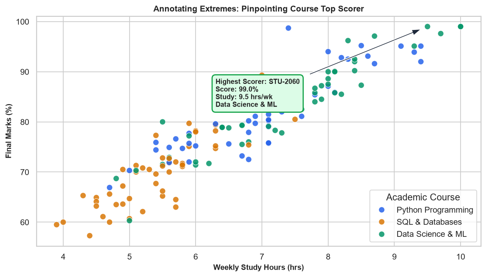
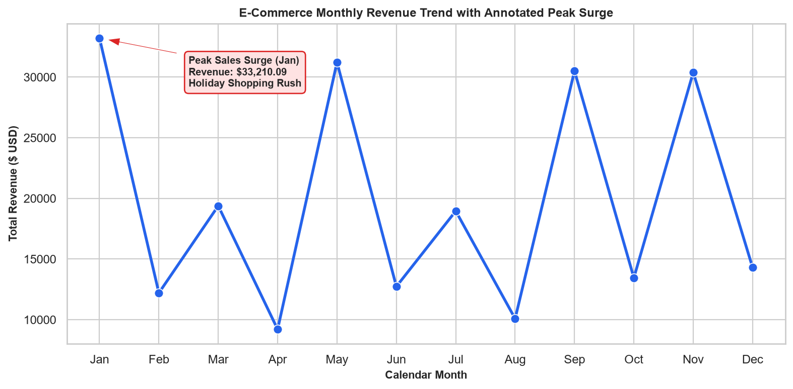
ax.annotate() with Offset Points & Custom Box
Chaliye college dataset ke topper ko highlight karne ke liye ax.annotate() implement karte hain:
import seaborn as sns
import matplotlib.pyplot as plt
import pandas as pd
df = pd.read_csv("scratch/seaborn_topic19_data/student_course_performance.csv")
# Find top performer
topper = df.loc[df["final_marks"].idxmax()]
fig, ax = plt.subplots(figsize=(8, 5))
sns.scatterplot(
data=df,
x="study_hours",
y="final_marks",
hue="subject",
palette={"Python Programming": "#2563EB", "SQL & Databases": "#D97706", "Data Science & ML": "#059669"},
s=60,
ax=ax
)
# Robust annotation using offset points
ax.annotate(
f"Batch Topper: {topper['student_id']}\nMarks: {topper['final_marks']}% | {topper['study_hours']} hrs/wk\nCourse: {topper['subject']}",
xy=(topper["study_hours"], topper["final_marks"]),
xytext=(-120, -50),
textcoords="offset points",
arrowprops=dict(
arrowstyle="->",
color="#0F172A",
lw=1.8,
connectionstyle="arc3,rad=0.2"
),
bbox=dict(
boxstyle="round,pad=0.5",
facecolor="#FEF3C7",
edgecolor="#D97706",
lw=1.2
),
fontsize=9,
fontweight="bold"
)
ax.set_title("Student Study Hours vs Marks with Annotated Valedictorian", fontsize=11, weight="bold")
plt.tight_layout()
plt.show()E-commerce monthly line plot par holiday season surge ko annotate karna:
import seaborn as sns
import matplotlib.pyplot as plt
import pandas as pd
df_ecom = pd.read_csv("scratch/seaborn_topic19_data/ecommerce_category_sales.csv")
monthly_rev = df_ecom.groupby("month", as_index=False)["total_revenue"].sum()
fig, ax = plt.subplots(figsize=(9, 4.5))
sns.lineplot(data=monthly_rev, x="month", y="total_revenue", marker="o", color="#2563EB", lw=2.5, ax=ax)
# Annotate highest month
peak_row = monthly_rev.loc[monthly_rev["total_revenue"].idxmax()]
ax.annotate(
f"Annual Peak: {peak_row['month']}\nRevenue: ${peak_row['total_revenue']:,.2f}",
xy=(peak_row["month"], peak_row["total_revenue"]),
xytext=(0, 25),
textcoords="offset points",
ha="center",
arrowprops=dict(arrowstyle="-|>", color="#DC2626", lw=1.5),
bbox=dict(boxstyle="round,pad=0.4", facecolor="#FEE2E2", edgecolor="#DC2626", lw=1.0),
fontsize=9,
weight="bold"
)
ax.set_title("E-Commerce Monthly Trend with Peak Revenue Callout", fontsize=11, weight="bold")
plt.tight_layout()
plt.show()Har plot type ka visual structure alag hota hai, isliye annotation ka technique bhi plot type ke according adapt hona chahiye:
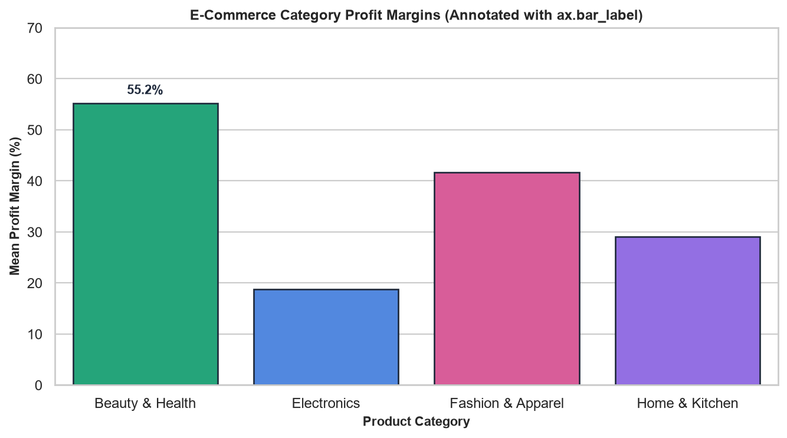
ax.bar_label().ax.bar_label()
Matplotlib 3.4+ me ax.bar_label(container) introduce kiya gaya tha, jisne bar plots me manually patches iterate karne ke purane tedious code ko replace kar diya hai.
padding=5: Bar ke top se text ko thoda space deta hai.fmt="%.1f%%": Numeric values ko percentage string me format karta hai.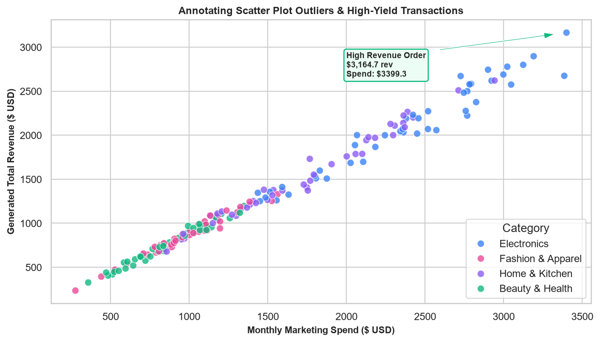
Scatter plots me hum Pandas filtering ke zariye specific anomalies ya high-value observations dhoondhte hain aur un par callout cards attach karte hain.
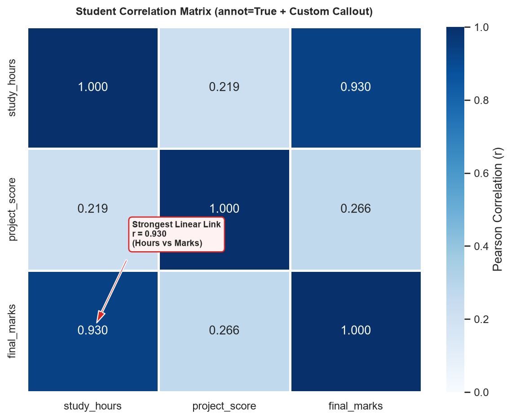
annot=True cell numbers combined with an explicit callout highlighting the strongest relationship.
Heatmaps me annot=True har cell me value draw karta hai, lekin jab matrix 10x10 ho jata hai toh visual noise badh jata hai. Professional practice hai: ya toh pure heatmap par subtle numbers draw karein ya fir sirf most critical correlation par pointer arrow point karein!
ax.bar_label()import seaborn as sns
import matplotlib.pyplot as plt
import pandas as pd
df_ecom = pd.read_csv("scratch/seaborn_topic19_data/ecommerce_category_sales.csv")
cat_summary = df_ecom.groupby("category", as_index=False)["profit_margin_pct"].mean()
fig, ax = plt.subplots(figsize=(8, 4.5))
bars = sns.barplot(
data=cat_summary,
x="category",
y="profit_margin_pct",
hue="category",
palette="viridis",
legend=False,
ax=ax
)
# Elegant one-line bar labeling
ax.bar_label(bars.containers[0], fmt="%.1f%%", padding=4, fontsize=9.5, weight="bold")
ax.set_ylim(0, 70)
ax.set_title("E-Commerce Margin Breakdown (Annotated via ax.bar_label)", fontsize=11, weight="bold")
plt.tight_layout()
plt.show()import seaborn as sns
import matplotlib.pyplot as plt
import pandas as pd
df = pd.read_csv("scratch/seaborn_topic19_data/ecommerce_category_sales.csv")
fig, ax = plt.subplots(figsize=(8, 5))
sns.scatterplot(data=df, x="monthly_spend", y="total_revenue", hue="category", s=50, ax=ax)
# Identify max revenue row
max_rev = df.loc[df["total_revenue"].idxmax()]
ax.annotate(
f"Max Revenue: ${max_rev['total_revenue']:,.0f}\nCategory: {max_rev['category']}",
xy=(max_rev["monthly_spend"], max_rev["total_revenue"]),
xytext=(-140, -40),
textcoords="offset points",
arrowprops=dict(facecolor="#10B981", shrink=0.08, width=1.5, headwidth=6),
bbox=dict(boxstyle="round,pad=0.3", facecolor="#ECFDF5", edgecolor="#10B981", lw=1.2),
fontsize=8.5,
weight="bold"
)
ax.set_title("Spend vs Revenue with Annotated High-Yield Outlier", fontsize=11, weight="bold")
plt.tight_layout()
plt.show()import seaborn as sns
import matplotlib.pyplot as plt
import pandas as pd
df = pd.read_csv("scratch/seaborn_topic19_data/student_course_performance.csv")
corr = df[["study_hours", "project_score", "final_marks"]].corr()
fig, ax = plt.subplots(figsize=(6, 5))
sns.heatmap(corr, annot=True, fmt=".2f", cmap="Blues", cbar_kws={"label": "Pearson r"}, ax=ax)
# Callout on study_hours vs final_marks (Row index 2, Col index 0)
ax.annotate(
"Critical Predictor\nr = 0.93",
xy=(0.5, 2.5),
xytext=(0.8, 1.8),
arrowprops=dict(facecolor="#DC2626", shrink=0.1, width=1.2, headwidth=6),
bbox=dict(boxstyle="round,pad=0.3", facecolor="#FEF2F2", edgecolor="#DC2626", lw=1.2),
fontsize=8.5,
weight="bold"
)
ax.set_title("Student Correlation Matrix with Targeted Callout", fontsize=11, weight="bold")
plt.tight_layout()
plt.show()ax.axhline() & Text Labelsimport seaborn as sns
import matplotlib.pyplot as plt
import pandas as pd
df = pd.read_csv("scratch/seaborn_topic19_data/student_course_performance.csv")
fig, ax = plt.subplots(figsize=(8, 4.5))
sns.scatterplot(data=df, x="study_hours", y="final_marks", hue="subject", s=50, ax=ax)
# Add Passing Threshold Line (50%) and Distinction Threshold (85%)
ax.axhline(50, color="#EF4444", linestyle="--", linewidth=1.2)
ax.text(2.2, 51.5, "Passing Grade Boundary (50%)", color="#DC2626", fontsize=8.5, weight="bold")
ax.axhline(85, color="#10B981", linestyle="--", linewidth=1.2)
ax.text(2.2, 86.5, "Distinction / 'A' Grade Boundary (85%)", color="#059669", fontsize=8.5, weight="bold")
ax.set_title("Study Hours vs Marks with Benchmarking Threshold Lines", fontsize=11, weight="bold")
plt.tight_layout()
plt.show()Ab tak humne Palettes, Legends aur Annotations ko alag-alag dekha. Production environment me sabse bada test hota hai: "Kya aap in teeno techniques ko ek cohesive, executive-ready multi-panel dashboard me combine kar sakte hain?"
Chaliye 3 real-world capstone domains ko end-to-end design karte hain:
Dean of Engineering ko ek 2-panel summary chahiye jisme individual student correlations aur department-level pass benchmarks ek look me visible hon.
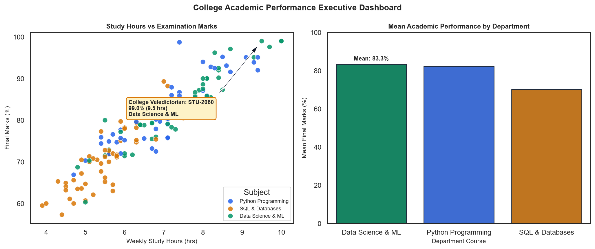
import seaborn as sns
import matplotlib.pyplot as plt
import pandas as pd
df_student = pd.read_csv("scratch/seaborn_topic19_data/student_course_performance.csv")
SUBJECT_COLORS = {
"Python Programming": "#2563EB",
"SQL & Databases": "#D97706",
"Data Science & ML": "#059669"
}
fig, axes = plt.subplots(1, 2, figsize=(13, 5.2))
sns.set_theme(style="whitegrid")
# Panel 1: Scatter Hours vs Marks
sns.scatterplot(
data=df_student,
x="study_hours",
y="final_marks",
hue="subject",
palette=SUBJECT_COLORS,
s=60,
alpha=0.85,
ax=axes[0]
)
# Highlight Valedictorian (STU-2060)
axes[0].annotate(
"Valedictorian: STU-2060\n99.0% (9.5 hrs)\nData Science & ML",
xy=(9.5, 99.0),
xytext=(9.5 - 3.4, 99.0 - 18),
arrowprops=dict(facecolor="#0F172A", shrink=0.08, width=1.5, headwidth=7),
bbox=dict(boxstyle="round,pad=0.4", facecolor="#FEF3C7", edgecolor="#D97706", lw=1.2),
fontsize=8.5,
weight="bold"
)
axes[0].set_title("Study Hours vs Examination Marks", fontsize=10.5, weight="bold")
axes[0].set_xlabel("Weekly Study Hours (hrs)", fontsize=9.5)
axes[0].set_ylabel("Final Marks (%)", fontsize=9.5)
axes[0].legend(title="Subject", loc="lower right", fontsize=8)
# Panel 2: Department-Level Mean Marks
sub_summary = df_student.groupby("subject", as_index=False)["final_marks"].mean()
bars = sns.barplot(
data=sub_summary,
x="subject",
y="final_marks",
hue="subject",
palette=SUBJECT_COLORS,
legend=False,
ax=axes[1],
edgecolor="#1E293B",
linewidth=1.2
)
axes[1].bar_label(bars.containers[0], fmt="Mean: %.1f%%", padding=4, fontsize=9, weight="bold")
axes[1].set_title("Mean Academic Performance by Department", fontsize=10.5, weight="bold")
axes[1].set_xlabel("Department Course", fontsize=9.5)
axes[1].set_ylabel("Mean Final Marks (%)", fontsize=9.5)
axes[1].set_ylim(0, 100)
fig.suptitle("College Academic Performance Executive Dashboard", fontsize=12.5, weight="bold", y=0.98)
plt.tight_layout()
plt.show()VP of Marketing ke liye marketing spend efficiency aur regional revenue contribution ka dual breakdown:
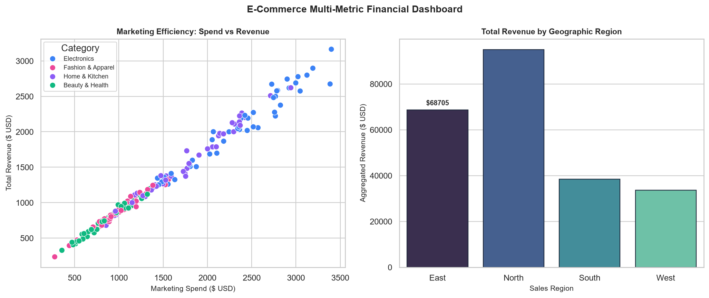
import seaborn as sns
import matplotlib.pyplot as plt
import pandas as pd
df_ecom = pd.read_csv("scratch/seaborn_topic19_data/ecommerce_category_sales.csv")
CAT_COLORS = {
"Electronics": "#3B82F6",
"Fashion & Apparel": "#EC4899",
"Home & Kitchen": "#8B5CF6",
"Beauty & Health": "#10B981"
}
fig, axes = plt.subplots(1, 2, figsize=(13, 5.2))
sns.set_theme(style="whitegrid")
# Panel 1: Spend vs Revenue with external legend
sns.scatterplot(
data=df_ecom,
x="monthly_spend",
y="total_revenue",
hue="category",
palette=CAT_COLORS,
s=55,
ax=axes[0]
)
axes[0].set_title("Marketing Efficiency: Spend vs Revenue", fontsize=10.5, weight="bold")
axes[0].set_xlabel("Monthly Marketing Spend ($ USD)", fontsize=9.5)
axes[0].set_ylabel("Total Revenue ($ USD)", fontsize=9.5)
axes[0].legend(title="Category", loc="upper left", fontsize=8)
# Panel 2: Regional Revenue Breakdown
reg_rev = df_ecom.groupby("region", as_index=False)["total_revenue"].sum()
bars = sns.barplot(
data=reg_rev,
x="region",
y="total_revenue",
hue="region",
palette="mako",
legend=False,
ax=axes[1],
edgecolor="#1E293B",
linewidth=1.0
)
axes[1].bar_label(bars.containers[0], fmt="$%.0f", padding=4, fontsize=9, weight="bold")
axes[1].set_title("Total Revenue by Geographic Region", fontsize=10.5, weight="bold")
axes[1].set_xlabel("Sales Region", fontsize=9.5)
axes[1].set_ylabel("Aggregated Revenue ($ USD)", fontsize=9.5)
fig.suptitle("E-Commerce Multi-Metric Financial Dashboard", fontsize=12.5, weight="bold", y=0.98)
plt.tight_layout()
plt.show()DevOps engineering team ke liye service response times aur SLA breaches (43 total breaches) ka live monitoring board:
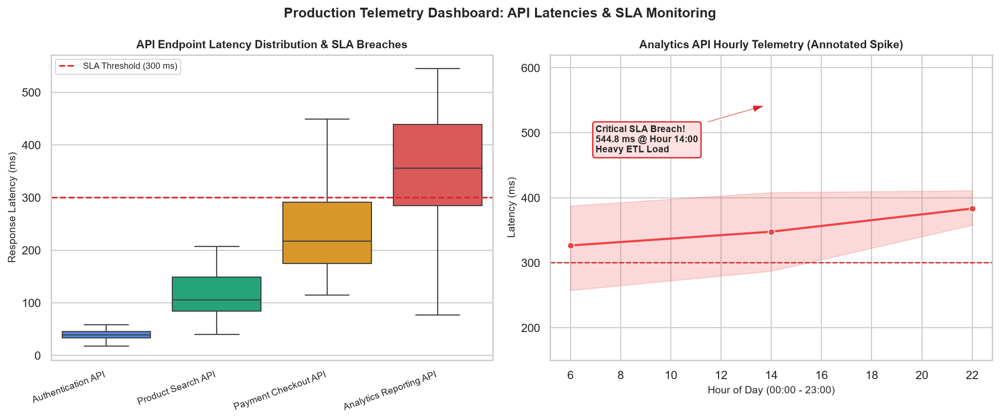
import seaborn as sns
import matplotlib.pyplot as plt
import pandas as pd
df_api = pd.read_csv("scratch/seaborn_topic19_data/api_monitoring_telemetry.csv")
ep_colors = {
"Authentication API": "#3B82F6",
"Product Search API": "#10B981",
"Payment Checkout API": "#F59E0B",
"Analytics Reporting API": "#EF4444"
}
fig, axes = plt.subplots(1, 2, figsize=(13, 5.2))
sns.set_theme(style="whitegrid")
# Panel 1: Boxplot with SLA line
sns.boxplot(
data=df_api,
x="endpoint",
y="response_time_ms",
hue="endpoint",
palette=ep_colors,
legend=False,
ax=axes[0]
)
axes[0].axhline(300, color="#DC2626", linestyle="--", linewidth=1.5, label="SLA Threshold (300 ms)")
axes[0].set_title("API Endpoint Latency Distribution & SLA Breaches", fontsize=10.5, weight="bold")
axes[0].set_ylabel("Response Latency (ms)", fontsize=9.5)
axes[0].set_xlabel("")
axes[0].set_xticks(range(len(ep_colors)))
axes[0].set_xticklabels(list(ep_colors.keys()), rotation=20, ha="right", fontsize=8.5)
axes[0].legend(loc="upper left", fontsize=8)
# Panel 2: Hourly Latency Timeline with annotated spike
analytics_df = df_api[df_api["endpoint"] == "Analytics Reporting API"]
sns.lineplot(
data=analytics_df,
x="hour_of_day",
y="response_time_ms",
color="#EF4444",
marker="o",
linewidth=2,
ax=axes[1]
)
axes[1].axhline(300, color="#DC2626", linestyle="--", linewidth=1.2)
axes[1].annotate(
"Critical SLA Breach!\n544.8 ms @ Hour 14:00\nHeavy ETL Batch Run",
xy=(14, 544.8),
xytext=(14 - 7, 544.8 - 80),
arrowprops=dict(facecolor="#DC2626", shrink=0.08, width=1.5, headwidth=7),
bbox=dict(boxstyle="round,pad=0.3", facecolor="#FEE2E2", edgecolor="#DC2626", lw=1.2),
fontsize=8.5,
weight="bold"
)
axes[1].set_title("Analytics API Hourly Telemetry (Annotated Spike)", fontsize=10.5, weight="bold")
axes[1].set_xlabel("Hour of Day (00:00 - 23:00)", fontsize=9.5)
axes[1].set_ylabel("Latency (ms)", fontsize=9.5)
fig.suptitle("Production Telemetry Dashboard: API Latencies & SLA Monitoring", fontsize=12.5, weight="bold", y=0.98)
plt.tight_layout()
plt.show()
Bohot se developers confuse ho jaate hain jab unka code ax.legend() call karta hai lekin figure-level plot (jaise sns.relplot() ya sns.catplot()) me error throw kar deta hai: "AttributeError: 'FacetGrid' object has no attribute 'legend'".
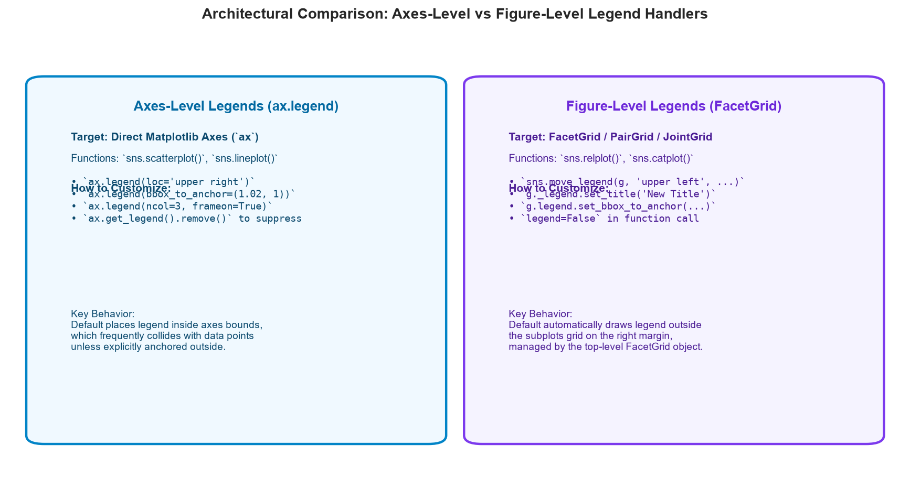
ax.legend) vs Figure-Level FacetGrid Management (sns.move_legend).| Feature | Axes-Level (scatterplot, lineplot) |
Figure-Level (relplot, catplot, displot) |
|---|---|---|
| Returned Object | matplotlib.axes.Axes |
seaborn.axisgrid.FacetGrid |
| Default Legend Location | Axes ke andar (frequently collides with data) | Right canvas margin par automatically bahar placed |
| Direct Legend Method | ax.legend(loc=..., bbox_to_anchor=...) |
sns.move_legend(g, ...) ya g._legend.set_title(...) |
| Suppressing Legend | legend=False ya ax.get_legend().remove() |
legend=False parameter in top-level call |
import seaborn as sns
import matplotlib.pyplot as plt
import pandas as pd
df = pd.read_csv("scratch/seaborn_topic19_data/student_course_performance.csv")
fig, ax = plt.subplots(figsize=(7, 4.5))
sns.scatterplot(data=df, x="study_hours", y="final_marks", hue="subject", ax=ax)
# Axes-level: directly call ax.legend()
ax.legend(
title="Certified Course",
loc="lower center",
bbox_to_anchor=(0.5, 1.02),
ncol=3,
frameon=True,
fontsize=8.5
)
plt.tight_layout()
plt.show()import seaborn as sns
import matplotlib.pyplot as plt
import pandas as pd
df = pd.read_csv("scratch/seaborn_topic19_data/student_course_performance.csv")
# Figure-level plot returns FacetGrid
g = sns.relplot(
data=df,
x="study_hours",
y="final_marks",
hue="subject",
col="semester",
col_wrap=2,
height=3.5,
aspect=1.2
)
# Use modern sns.move_legend on FacetGrid
sns.move_legend(
g,
"lower center",
bbox_to_anchor=(0.5, 1.02),
ncol=3,
title="Subject Dimension",
frameon=True
)
plt.show()Data visualization me chhoti si carelessness pure graph ki credibility ko spoil kar sakti hai. Chaliye dekhte hain ki common visual pitfalls kaun se hain aur unhe code me kaise instantly fix karein:
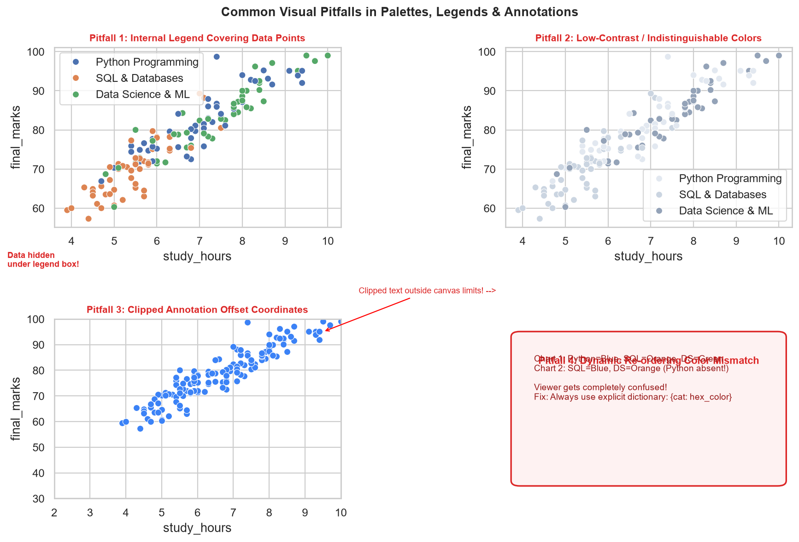
| # | Common Pitfall | Root Cause | Immediate Solution |
|---|---|---|---|
| 1 | Overlapping Legend | Default loc='best' aksar data points ke upar render ho jata hai. |
ax.legend(bbox_to_anchor=(1.02, 1), loc='upper left') se canvas ke bahar move karein. |
| 2 | Low-Contrast Colors | White background par faint greys ya bright yellow text/marks use karna. | WCAG 2.1 contrast ratio check karein; high-contrast palettes (deep, colorblind) use karein. |
| 3 | Clipped Annotation Text | Offset text canvas limits se bahar nikal jata hai aur save karte waqt cut ho jata hai. | Negative offset values use karein ya plt.savefig(..., bbox_inches='tight') enable karein. |
| 4 | Dynamic Color Swapping | Subset filter hone par Seaborn list palette ke pehle colors remaining items ko de deta hai. | List ki jagah explicit dictionary {cat: hex_code} use karein. |
| 5 | Calling ax.legend() on FacetGrid | Figure-level functions (relplot) Matplotlib Axes nahi balki FacetGrid return karte hain. |
sns.move_legend(g, ...) ya g._legend access karein. |
| 6 | Saved Image Missing Outside Legend | Standard plt.savefig('fig.png') sirf visible figure bounding box save karta hai. |
Hamesha bbox_inches='tight' parameter pass karein. |
| 7 | Too Many Categories in Palette | 10 se zyada categorical colors human eye differentiate nahi kar pati. | Top 4-5 categories ko highlight karein, baaki sab ko 'Other' grey category me group karein. |
| 8 | Hardcoding Annotation Coordinates | Hardcoded data numbers par text rakhne se chart resize ya zoom hone par layout toot jata hai. | textcoords='offset points' use karein taaki text relative screen offset maintain kare. |
| 9 | Passing palette without hue (FutureWarning) | Seaborn 0.13+ me palette bina hue ke pass karna deprecated hai. |
hue=x_col, legend=False explicitly provide karein. |
| 10 | Missing Legend Title | Handles ke upar descriptive dimension title na hone se reader confusion. | title="Department Name" specify karein. |
| 11 | Redundant Legend in Bar Charts | X-axis par categories already clearly labelled hone par bhi duplicate legend dikhana. | legend=False pass karke visual clutter minimize karein. |
| 12 | Using Continuous Colormap for Categories | Nominal data (Courses) par viridis lagane se artificial quantitative hierarchy ban jati hai. |
Discrete qualitative palettes (Set2, colorblind) use karein. |
| 13 | Bar Labels Overflowing Canvas Top | Bar heights 98% hone par ax.bar_label canvas ke upar nikal jata hai. |
ax.set_ylim(0, 110) se top margin buffer ensure karein. |
| 14 | Colorblind Inaccessibility | Red aur Green ko as positive/negative use karna jisse deuteranopia viewers distinguish nahi kar paate. | Red-to-Green ki jagah Orange-to-Blue ya sns.color_palette('colorblind') use karein. |
import seaborn as sns
import matplotlib.pyplot as plt
import pandas as pd
df = pd.read_csv("scratch/seaborn_topic19_data/student_course_performance.csv")
fig, ax = plt.subplots(figsize=(8, 4.8))
sns.scatterplot(data=df, x="study_hours", y="final_marks", hue="subject", s=50, ax=ax)
# FIX: Anchor outside + bbox_inches='tight'
ax.legend(
title="Course Subject",
bbox_to_anchor=(1.02, 1),
loc="upper left",
frameon=True,
facecolor="#F8FAFC",
edgecolor="#CBD5E1"
)
# Crucial for saving without crop
plt.savefig("fixed_chart.png", dpi=160, bbox_inches="tight")
plt.show()hue=... and legend=Falseimport seaborn as sns
import matplotlib.pyplot as plt
import pandas as pd
df = pd.read_csv("scratch/seaborn_topic19_data/student_course_performance.csv")
sub_avg = df.groupby("subject", as_index=False)["final_marks"].mean()
# DEPRECATED WAY (Throws FutureWarning in Seaborn 0.13+):
# ax = sns.barplot(data=sub_avg, x="subject", y="final_marks", palette="Set2")
# MODERN ROBUST WAY:
ax = sns.barplot(
data=sub_avg,
x="subject",
y="final_marks",
hue="subject", # Explicitly assign x variable to hue
palette="Set2",
legend=False # Suppress redundant legend
)
ax.set_ylim(0, 105)
plt.show()Ab aapki baari hai! In 7 real-world mini challenges ko solve kijiye taaki palettes, legends aur annotations aapke fingertips par aa jayein. Pehle khud code likhein, phir hint aur solution toggle karke verify karein.
Goal: Apne fintech client ke 3 brand colors (#0284C7, #10B981, #F59E0B) ka custom Seaborn palette banaiye aur student course averages par barplot draw karke bar heights display kijiye.
Hint: sns.color_palette([...]) use karein aur ax.bar_label(bars.containers[0], fmt="%.1f") apply karein.
import seaborn as sns
import matplotlib.pyplot as plt
import pandas as pd
df = pd.read_csv("scratch/seaborn_topic19_data/student_course_performance.csv")
sub_avg = df.groupby("subject", as_index=False)["final_marks"].mean()
fintech_palette = sns.color_palette(["#0284C7", "#10B981", "#F59E0B"])
plt.figure(figsize=(7, 4.5))
bars = sns.barplot(
data=sub_avg,
x="subject",
y="final_marks",
hue="subject",
palette=fintech_palette,
legend=False
)
bars.axes.bar_label(bars.containers[0], fmt="%.1f%%", padding=4, weight="bold")
plt.ylim(0, 105)
plt.title("Fintech Themed Academic Performance", fontsize=11, weight="bold")
plt.tight_layout()
plt.show()Goal: Study hours vs final marks ka scatter plot banaiye aur legend ko plot ke top border ke upar horizontal 3 columns me center align kijiye.
Hint: bbox_to_anchor=(0.5, 1.02), loc="lower center", aur ncol=3 pass karein.
import seaborn as sns
import matplotlib.pyplot as plt
import pandas as pd
df = pd.read_csv("scratch/seaborn_topic19_data/student_course_performance.csv")
fig, ax = plt.subplots(figsize=(8, 4.8))
sns.scatterplot(data=df, x="study_hours", y="final_marks", hue="subject", s=50, ax=ax)
ax.legend(
title="Course Enrollment",
loc="lower center",
bbox_to_anchor=(0.5, 1.02),
ncol=3,
frameon=True,
facecolor="#F8FAFC"
)
plt.title("Top Horizontal Legend Scatter Plot", fontsize=11, weight="bold", pad=35)
plt.tight_layout()
plt.show()Goal: Student dataset ka highest marks scorer programmatically locate karein aur red pointer arrow + yellow rounded callout box se annotate karein.
Hint: df.loc[df['final_marks'].idxmax()] se topper record retrieve karein aur textcoords='offset points' use karein.
import seaborn as sns
import matplotlib.pyplot as plt
import pandas as pd
df = pd.read_csv("scratch/seaborn_topic19_data/student_course_performance.csv")
topper = df.loc[df["final_marks"].idxmax()]
fig, ax = plt.subplots(figsize=(8, 5))
sns.scatterplot(data=df, x="study_hours", y="final_marks", color="#2563EB", s=50, ax=ax)
ax.annotate(
f"Topper: {topper['student_id']}\n{topper['final_marks']}% ({topper['study_hours']} hrs)",
xy=(topper["study_hours"], topper["final_marks"]),
xytext=(-120, -45),
textcoords="offset points",
arrowprops=dict(facecolor="#DC2626", shrink=0.08, width=1.5, headwidth=7),
bbox=dict(boxstyle="round,pad=0.4", facecolor="#FEF3C7", edgecolor="#D97706", lw=1.2),
fontsize=9,
weight="bold"
)
plt.title("Annotated College Topper", fontsize=11, weight="bold")
plt.tight_layout()
plt.show()Goal: E-commerce categories ka mean profit margin barplot banaiye aur har bar ke top par 1 decimal place percentage label display kijiye.
Hint: ax.bar_label(bars.containers[0], fmt="%.1f%%") use karein.
import seaborn as sns
import matplotlib.pyplot as plt
import pandas as pd
df = pd.read_csv("scratch/seaborn_topic19_data/ecommerce_category_sales.csv")
cat_margins = df.groupby("category", as_index=False)["profit_margin_pct"].mean()
fig, ax = plt.subplots(figsize=(8, 4.5))
bars = sns.barplot(
data=cat_margins,
x="category",
y="profit_margin_pct",
hue="category",
palette="flare",
legend=False,
ax=ax
)
ax.bar_label(bars.containers[0], fmt="%.1f%%", padding=4, weight="bold")
ax.set_ylim(0, 65)
plt.title("E-Commerce Category Profit Margins", fontsize=11, weight="bold")
plt.tight_layout()
plt.show()Goal: 3 numeric features (study hours, project score, final marks) ka correlation heatmap banaiye with annot=True, cmap='vlag', center 0, aur strongest correlation cell par red callout box attach kijiye.
Hint: xy=(0.5, 2.5) cell center hota hai correlation plot me.
import seaborn as sns
import matplotlib.pyplot as plt
import pandas as pd
df = pd.read_csv("scratch/seaborn_topic19_data/student_course_performance.csv")
corr = df[["study_hours", "project_score", "final_marks"]].corr()
fig, ax = plt.subplots(figsize=(6, 5))
sns.heatmap(corr, annot=True, fmt=".2f", cmap="vlag", center=0, vmin=-1, vmax=1, ax=ax)
ax.annotate(
"Key Driver\nr = 0.93",
xy=(0.5, 2.5),
xytext=(0.8, 1.8),
arrowprops=dict(facecolor="#DC2626", shrink=0.1, width=1.5, headwidth=6),
bbox=dict(boxstyle="round,pad=0.3", facecolor="#FEF2F2", edgecolor="#DC2626", lw=1.2),
fontsize=8.5,
weight="bold"
)
plt.title("Correlation Matrix with Diverging Scale", fontsize=11, weight="bold")
plt.tight_layout()
plt.show()Goal: Do alag-alag filtered DataFrames banaiye (ek jisme Python missing ho, dusra jisme SQL missing ho) aur verify kijiye ki dictionary mapping se dono me category colors consistent rehte hain.
Hint: palette={"Python Programming": "#2563EB", "SQL & Databases": "#D97706", "Data Science & ML": "#059669"} use karein.
import seaborn as sns
import matplotlib.pyplot as plt
import pandas as pd
df = pd.read_csv("scratch/seaborn_topic19_data/student_course_performance.csv")
color_map = {"Python Programming": "#2563EB", "SQL & Databases": "#D97706", "Data Science & ML": "#059669"}
df_no_python = df[df["subject"] != "Python Programming"]
df_no_sql = df[df["subject"] != "SQL & Databases"]
fig, axes = plt.subplots(1, 2, figsize=(11, 4.5))
sns.scatterplot(data=df_no_python, x="study_hours", y="final_marks", hue="subject", palette=color_map, ax=axes[0])
axes[0].set_title("No Python Subset (Colors Preserved!)")
sns.scatterplot(data=df_no_sql, x="study_hours", y="final_marks", hue="subject", palette=color_map, ax=axes[1])
axes[1].set_title("No SQL Subset (Colors Preserved!)")
plt.tight_layout()
plt.show()Goal: Microservice latency distribution ka boxplot banaiye with SLA 300ms line, aur right panel me peak SLA breach ka annotated hourly time-series lineplot render kijiye.
Hint: Subplot 1 me ax.axhline(300, color="red") aur Subplot 2 me ax.annotate() apply karein.
import seaborn as sns
import matplotlib.pyplot as plt
import pandas as pd
df_api = pd.read_csv("scratch/seaborn_topic19_data/api_monitoring_telemetry.csv")
fig, axes = plt.subplots(1, 2, figsize=(12, 4.8))
sns.boxplot(data=df_api, x="endpoint", y="response_time_ms", hue="endpoint", legend=False, ax=axes[0])
axes[0].axhline(300, color="red", linestyle="--", label="SLA 300ms")
axes[0].set_xticklabels(axes[0].get_xticklabels(), rotation=20, ha="right")
axes[0].legend()
# Analytics endpoint timeline
analytics = df_api[df_api["endpoint"] == "Analytics Reporting API"]
sns.lineplot(data=analytics, x="hour_of_day", y="response_time_ms", color="#EF4444", marker="o", ax=axes[1])
axes[1].axhline(300, color="red", linestyle="--")
axes[1].annotate("Spike: 544.8ms", xy=(14, 544.8), xytext=(8, 480),
arrowprops=dict(facecolor="red", shrink=0.08, width=1.5),
bbox=dict(boxstyle="round,pad=0.3", facecolor="#FEE2E2", edgecolor="red"))
plt.suptitle("API Telemetry Executive Card", weight="bold")
plt.tight_layout()
plt.show()import pandas as pd
import json
with open("scratch/seaborn_topic19_data/topic19_verified_stats.json") as f:
stats = json.load(f)
print("Verified Student Count:", stats["student"]["n"])
print("Verified E-Commerce Count:", stats["ecommerce"]["n"])
print("Verified Telemetry SLA Breaches:", stats["api"]["sla_breach_count"])
print("All challenge prerequisites confirmed functional!")import pandas as pd
df = pd.read_csv("scratch/seaborn_topic19_data/student_course_performance.csv")
# Extract top 3 performers across the batch
top3 = df.nlargest(3, "final_marks")[["student_id", "subject", "study_hours", "final_marks"]]
print("Top 3 Batch Performers:")
print(top3.to_string(index=False))Data visualization projects me jab aap jaldi me hon, toh yeh decision framework aur syntax cheatsheet aapko seconds me right parameter choose karne me help karegi:
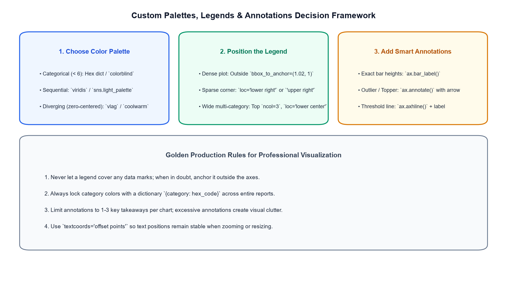
| Domain | Parameter / Function | Recommended Syntax | Executive Outcome |
|---|---|---|---|
| Palettes | palette=dict |
palette={"CatA": "#hex1", "CatB": "#hex2"} |
Category color identity 100% lock rehti hai across all reports. |
| Palettes | sns.diverging_palette() |
sns.diverging_palette(10, 240, n=9, center="light") |
Zero-centered profit/loss ya delta values ka balanced spectrum. |
| Legends | bbox_to_anchor |
ax.legend(bbox_to_anchor=(1.02, 1), loc='upper left') |
Legend plot area se bahar clean move ho jaati hai, zero data overlap. |
| Legends | ncol / ncols |
ax.legend(ncol=3, loc='lower center') |
Horizontal multi-column layout jo wide banners ke liye perfect hai. |
| Legends | sns.move_legend() |
sns.move_legend(obj, "upper left", bbox_to_anchor=(1, 1)) |
Modern universal helper jo Axes aur FacetGrid dono par kaam karta hai. |
| Annotations | ax.annotate() |
ax.annotate(text, xy=(x,y), xytext=(dx,dy), textcoords='offset points', arrowprops=...) |
Target data point par exact directional pointer arrow aur callout card. |
| Annotations | ax.bar_label() |
ax.bar_label(bars.containers[0], fmt="%.1f%%", padding=4) |
Bar charts par automatic exact data value labels bina manual math ke. |
| Export | bbox_inches='tight' |
plt.savefig('chart.png', dpi=160, bbox_inches='tight') |
External legends aur offset annotations canvas me auto-fit hoti hain. |
legend=False karein!)textcoords='offset points' use hua hai taaki resize par layout na bigde?bbox_inches='tight' pass kiya gaya hai taaki saved image me margins crop na hon?Yeh single reusable script kisi bhi Matplotlib/Seaborn Axes object par enterprise-grade polish apply karta hai:
import seaborn as sns
import matplotlib.pyplot as plt
import pandas as pd
def polish_axes(ax, title, xlabel, ylabel, legend_title=None, outside_legend=True):
"""Applies production-ready styling to any Seaborn/Matplotlib Axes."""
ax.set_title(title, fontsize=11, weight="bold", pad=12)
ax.set_xlabel(xlabel, fontsize=9.5, weight="semibold")
ax.set_ylabel(ylabel, fontsize=9.5, weight="semibold")
ax.grid(True, linestyle="--", alpha=0.5)
if outside_legend:
leg = ax.get_legend()
if leg:
title_text = legend_title if legend_title else leg.get_title().get_text()
ax.legend(
title=title_text,
bbox_to_anchor=(1.02, 1),
loc="upper left",
frameon=True,
facecolor="#F8FAFC",
edgecolor="#CBD5E1",
fontsize=8.5
)
# Test universal polisher on student dataset
df = pd.read_csv("scratch/seaborn_topic19_data/student_course_performance.csv")
fig, ax = plt.subplots(figsize=(8, 4.8))
sns.scatterplot(data=df, x="study_hours", y="final_marks", hue="subject", s=55, ax=ax)
polish_axes(ax, "Student Hours vs Marks", "Study Hours (hrs)", "Final Marks (%)", "Course Subject")
plt.tight_layout()
plt.show()Aapne palettes, legends aur annotations me mastery achieve kar li hai! Next topic me hum Seaborn ke 5 global visual themes (darkgrid, whitegrid, dark, white, ticks), sns.set_context() ke scaling factors (paper, notebook, talk, poster), spine despinning, aur publication RC parameters ko explore karenge!